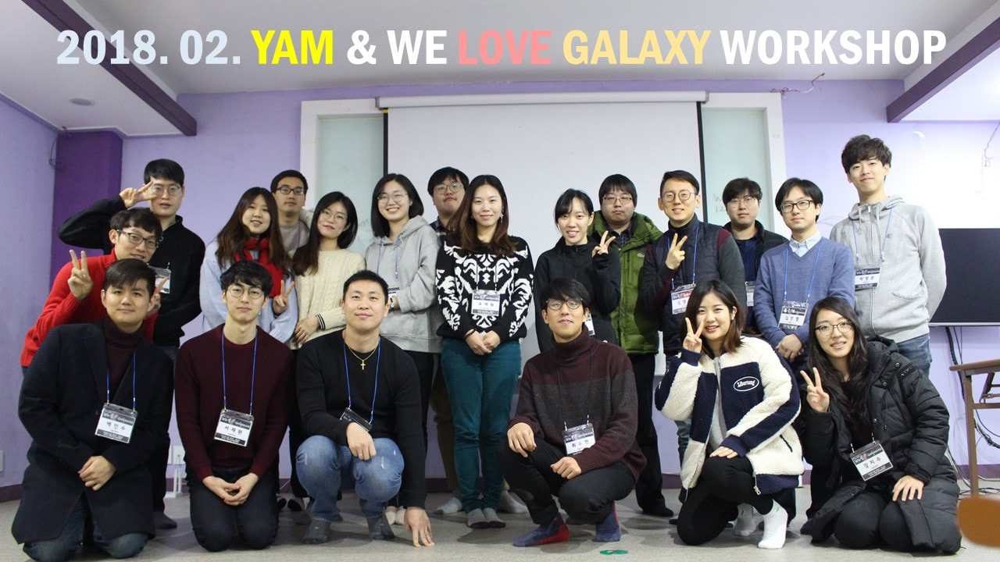
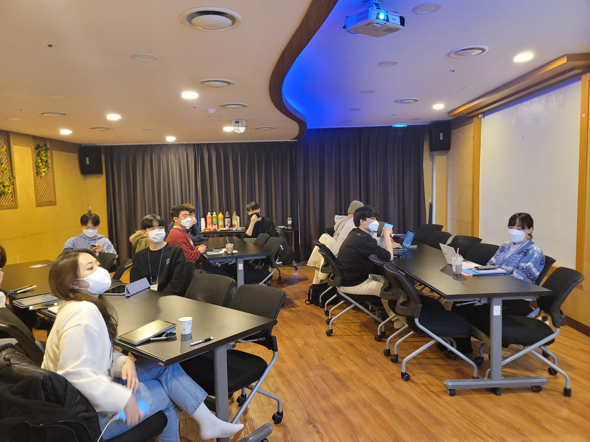
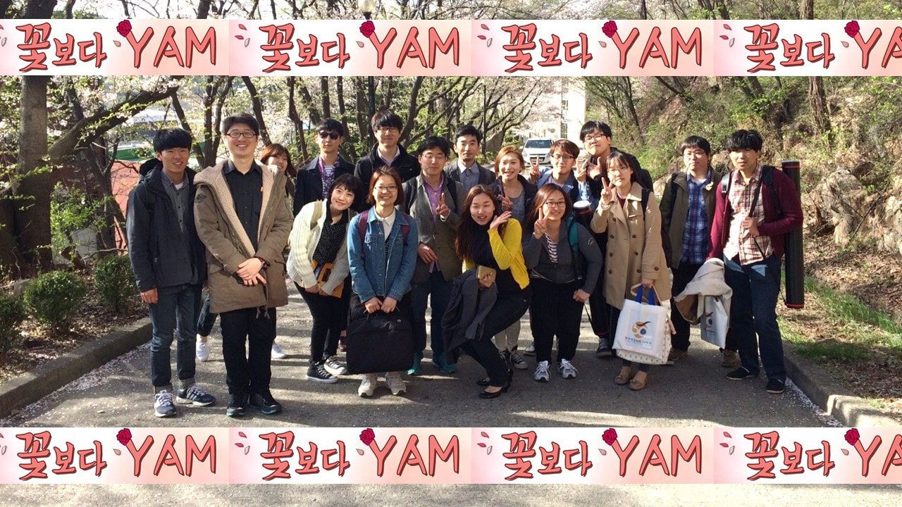
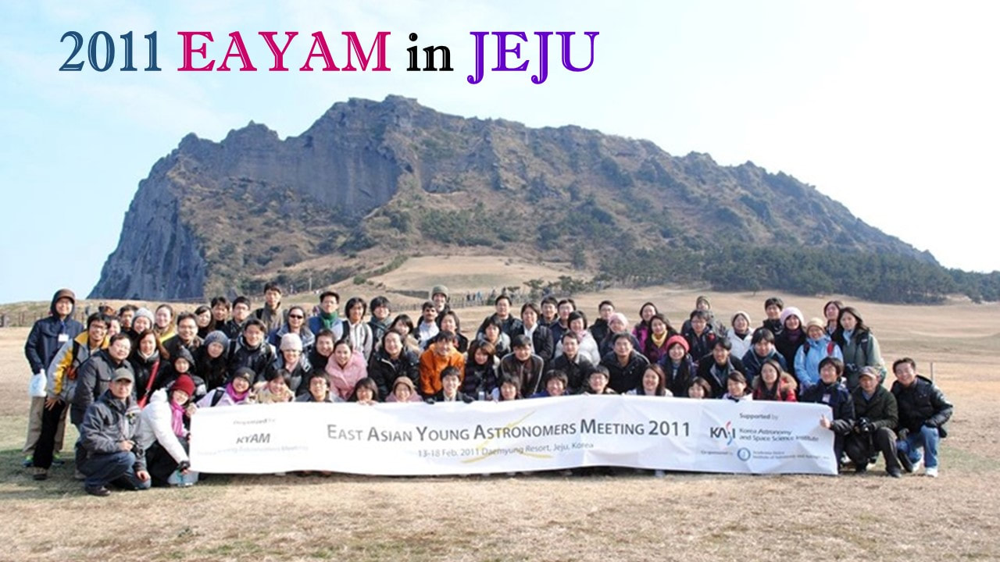

The Korean Young Astronomers Meeting (KYAM) was founded in 1991 to foster exchange and fellowship among graduate students in astronomy in Korea. KYAM is now an official division of the Korean Astronomical Society (KAS), and through workshops, the annual general meeting, and the YAM Colloquium, we are building a community in which young astronomers grow together. KYAM also represents Korea at international gatherings of early-career astronomers such as EAYAM (East Asian Young Astronomers Meeting).
Connect with astronomy students from across Korea, share research tips, and grow together.
Fill out the membership form